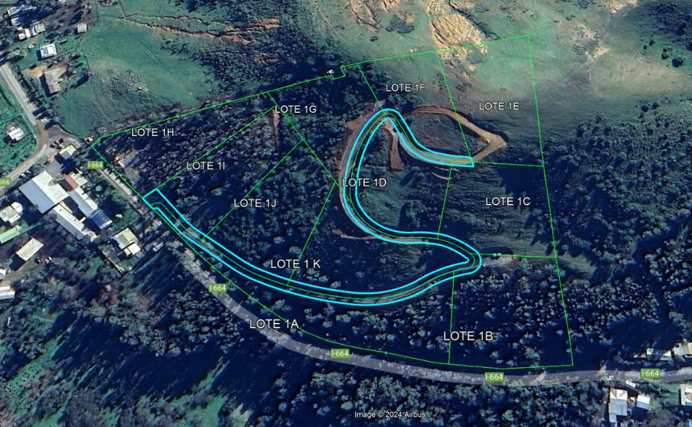

Bienvenido
Descubre Altos de Molineros, un exclusivo proyecto de parcelas en el corazón del Valle de Colchagua. Un entorno natural, tranquilo y con conectividad privilegiada.
Agendar visita por WhatsAppSobre el Proyecto
El proyecto Altos de Molineros está ubicado en pleno Valle de Colchagua, en el sector Rinconada de Molineros, comuna de Peralillo (VI Región del Libertador Bernardo O’Higgins). Está próximo a la Viña Los Vascos, una viña premium reconocida mundialmente, con más de 640 hectáreas de viñedos.
Este desarrollo contempla solo 11 parcelas de 5.000 m² con topografías variadas (lomajes, pie de cerro), todas con vistas privilegiadas y paisajes únicos. Las parcelas están listas para escriturar y cuentan con urbanización completa: caminos asfaltados, agua potable y de pozo, electricidad y acceso a fibra óptica.
La ubicación es estratégica: a pasos de escuela, centro médico, supermercados, media luna y estadio. Excelente conectividad a zonas urbanas y turísticas: a 150 min de Santiago, 20 min de Santa Cruz, 50 min de Pichilemu y 45 min del Lago Rapel.
El reglamento del proyecto está diseñado para proteger el entorno, seleccionando materiales, formas y colores que se integran armónicamente al paisaje. La propuesta arquitectónica combina tradición y modernidad, destacando el valor de la zona central de Chile.
Altos de Molineros promueve soluciones habitacionales sustentables para primera o segunda vivienda, considerando casas con jardín, piscina, quincho y estacionamiento.
Galería
Ubicación
Rinconada de Molineros, Peralillo – VI Región, Chile.
Máster Plan y Ubicación Satelital
Máster Plan

Vista Satelital
Contacto
- 📞 WhatsApp: +56 9 1234 5678
- 📧 Correo: contacto@altosdemolineros.cl

{kind=link}
{kind=link}
{kind=link}
{kind=link}
{kind=link}
{kind=link}
{kind=link}
{kind=link}
{kind=link}
{kind=link}